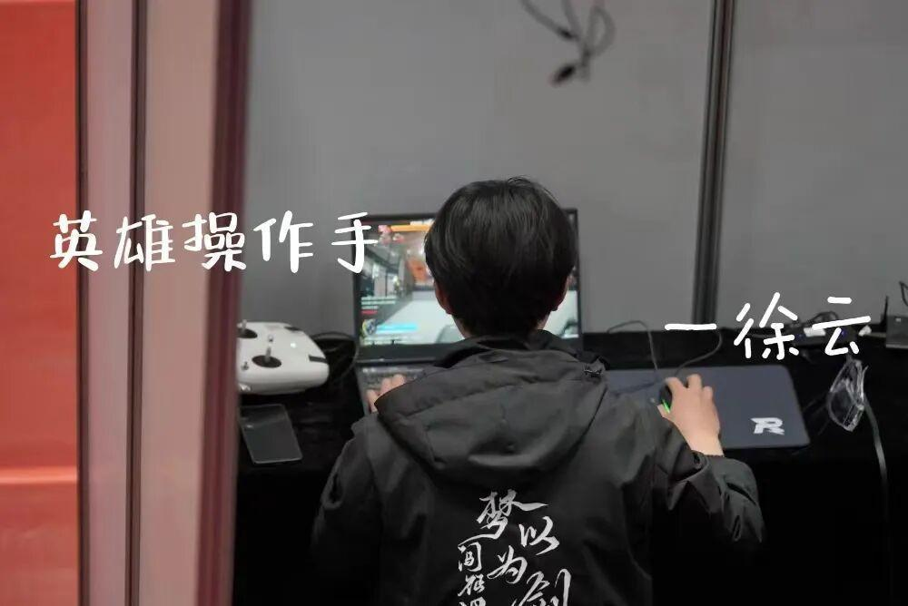
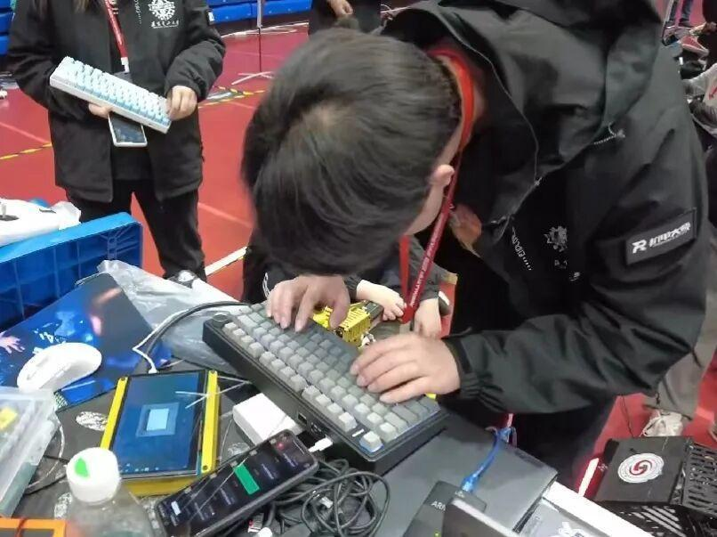
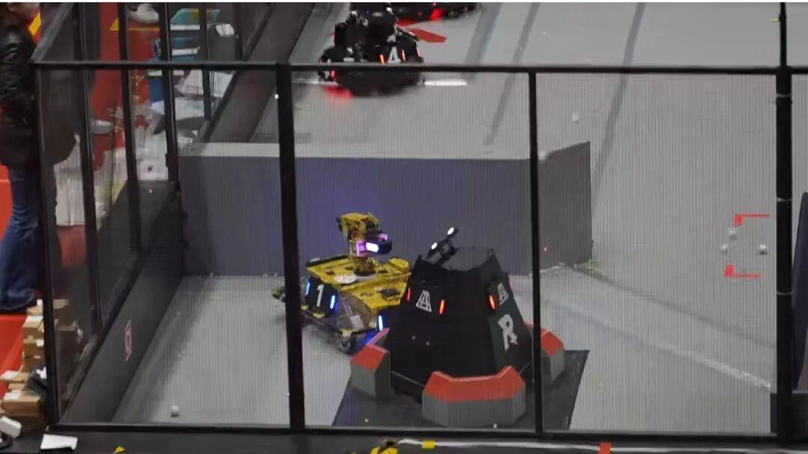
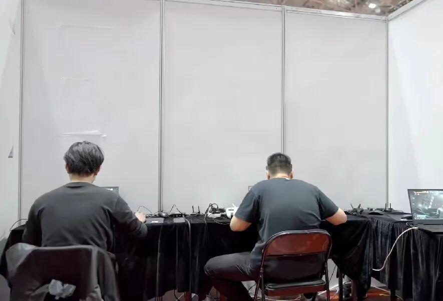
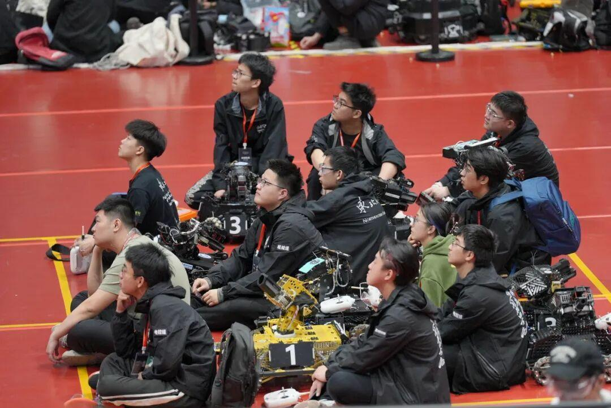

人物专访|机械组外聘视觉——徐云
英雄操作手专访


欢迎来到小A的专访栏目，今天我们邀请的嘉宾是英雄操作手——徐云，让我们来聊一聊吧！
1
自我介绍
问：可以做个自我介绍吗？
答：“ 大家好我叫徐云，2024赛季项管、英雄自瞄和雷达站负责人+机械组外聘组员，黄色泥头车操作手。”

在运营的“劝说”下介绍自己几句
2
比赛感受
问：这次联盟赛有什么感受？
答：“这几天最感动的时候不是最后晋级四强，而是预检录当天下午分组结果出来时慌得要死，结果晚上回到实验室，研究生大哥和大三大四学长全都回来帮忙调车陪着我们通宵三天打进半决赛 。感谢航哥收官之战，战神操作手带飞全局。”
比赛有苦有甜，在比赛中成长与队友共同进步，是比赛最大的意义。
加油！
3
关于英雄
问：对于英雄有什么与我们分享的吗？
答：“尽管英雄的身躯显得有些笨拙，它在战斗中所释放的强大威力却不容忽视。在激烈的赛事中，英雄扮演了至关重要的角色，它与步兵之间的精妙搭配更是战术的核心所在。然而，我个人期望着，若我们的英雄能拥有更为灵动迅捷的身形，那定将使其在战场上的表现如虎添翼，更显英姿飒爽。”

4
有何感受
问:这次操作对你有什么感受吗？
答：“在联盟赛的舞台上，心理素质的磨砺尤为关键。初踏赛场，紧张情绪如同潮水般涌来，让人心跳加速，手心冒汗。然而，随着一场又一场的比赛历练，逐渐地，从踌躇不安到信心满满。”

5
未来期许
问：对未来的英雄有什么期许吗？
答：“在超级对抗赛中，我们期待看到英雄机器人实现全面的技术创新，不仅拥有飞坡能力，还能精准吊射前哨站，从而实现对敌方基地的快速打击，以取得更为显著的战场优势。”
6
寄语
虽然这赛季缺少经费缺少设备，因为技术问题吵过架，因为BUG崩过心态，每天除了吃饭上课就是实验室，琴湖日出的景色看的数不胜数。
他们有一种激情叫做对技术的执着、对胜利的渴望、对成为优秀青年工程师让校旗和队旗挂上春茧体育场的信心。
赛季已经快进入尾声，无论结果如何，Ambition的所有成员对RoboMaster、对自己、对团队问心无愧。打RM后悔两年不打后悔一辈子，青春总要干些什么的。
在这里也希望学弟学妹们可以用一年爱上这里，用一辈子去回忆。
苏州，我们来了！
--2024.4.25. 01：32
文体中心311

初心高于胜负
END
推文|雷
图片|运营组
审核|战空